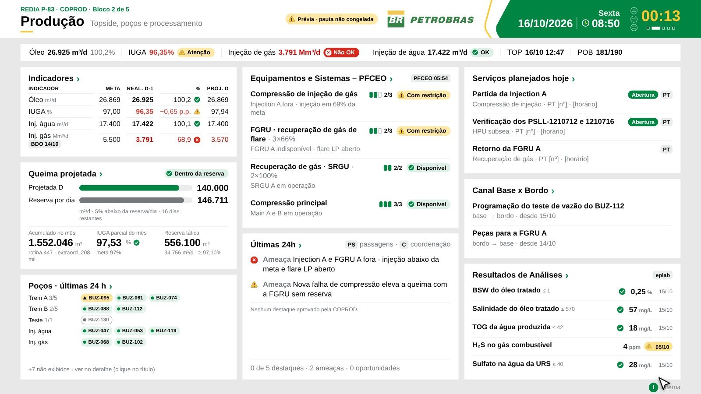

REDIA
Visão gerencial · proposta para BúziosUma Reunião Diária padronizada, rastreável e no tempo certo para as 10 FPSOs do campo · versão 2.4 em piloto
Por que
Hoje cada FPSO monta a sua REDIA à mão
- Dados espalhados em BDO, SITOP, PFCEO, APLAT, eplab e passagens de turno
- Material diferente em cada unidade (PowerPoint, Excel, PDF), preenchido à mão por coordenação
- Janela curta: BDO às 03:00–04:00, reunião às 08:45
- Tempo da reunião e demandas base ↔ bordo sem registro padronizado
- Um sistema para as 10 FPSOs, com a mesma pauta e o mesmo padrão visual
- Coleta automática com origem visível; o bordo só confere e completa
- Curadoria por coordenação e apresentação gerada sozinha
- Ata em PDF com decisões, demandas e o print das telas
Como funciona
Do turno à ata, em quatro camadas
 Abertura do GEPLAT · o essencial nos primeiros minutos, legível a 4 m nas TVs de 75"
Abertura do GEPLAT · o essencial nos primeiros minutos, legível a 4 m nas TVs de 75"Um clique por bloco busca os dados dos sistemas
GEPLAT, COPROD, COEMB e COMAN aprovam até 08:10
5 blocos com semáforo e referência em cada valor; tempo por tela
Pauta congelada, de acordo e ata imutável, arquivadas
O que muda para a gestão
Menos esforço de bordo, mais controle
Mesma pauta e mesmo semáforo nas 10 FPSOs; cada unidade ajusta as telas no Studio sem programar.
Tempo definido por tela e por detalhe; aviso de tempo esgotado e no máximo +3 min por tela.
Origem de cada dado, demandas base ↔ bordo com responsável e prazo, decisões com quem decidiu.
Cada valor com meta ou potencial; IUGA e queima também do ativo e do campo.

Cronômetro da tela na apresentação (COPROD)- Bordo executa, base processa: o sistema tira trabalho de bordo em vez de criar.
- Histórico consultável: todas as REDIAs no Arquivo, com busca.
- Funciona no celular e nas TVs via Teams.
Próximo passo
Piloto pronto; o que precisamos da gestão
- Fluxo completo da coleta à ata
- 10 unidades, contas de teste e administração
- Mais de 580 verificações automáticas
- Só dados de exemplo até a aprovação
- Base de dados e hospedagem internas
- Login corporativo
- Backup, retenção e LGPD
- Integrações com SITOP, BDO, PFCEO, APLAT e eplab
- Patrocinar o piloto e o pedido à TIC/SI
- Indicar um ponto focal por FPSO para os testes
- Validar a pauta padrão e os tempos por bloco
Deck completo com todas as funções e o app de teste: página inicial da REDIA Búzios.